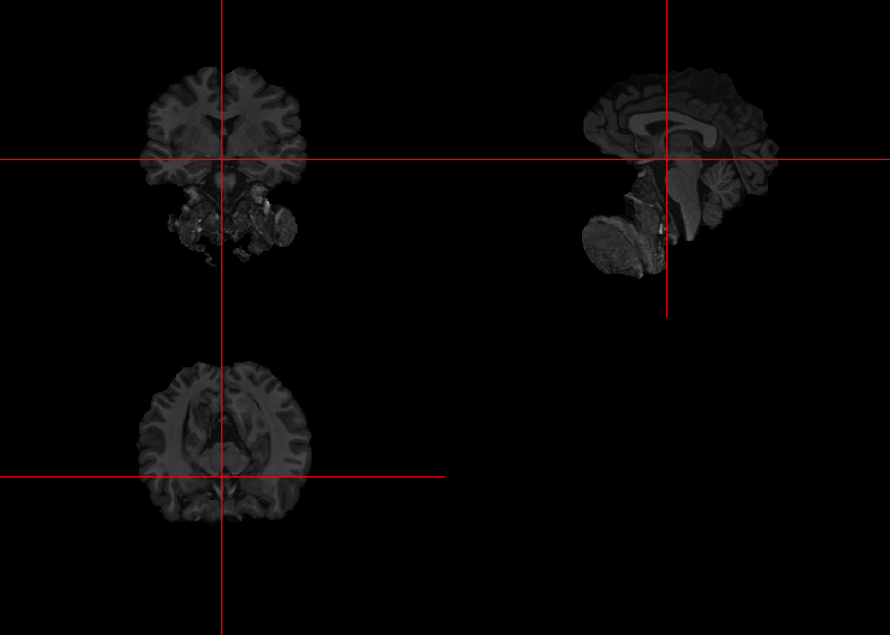
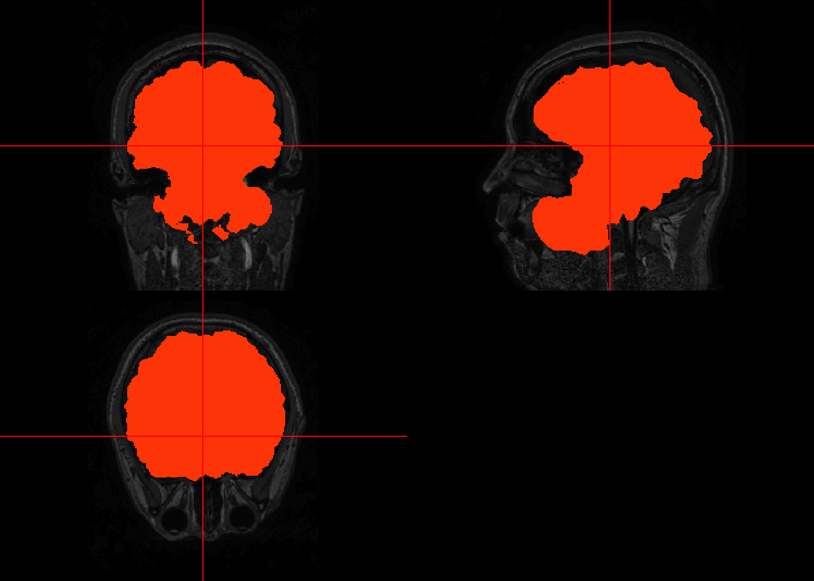
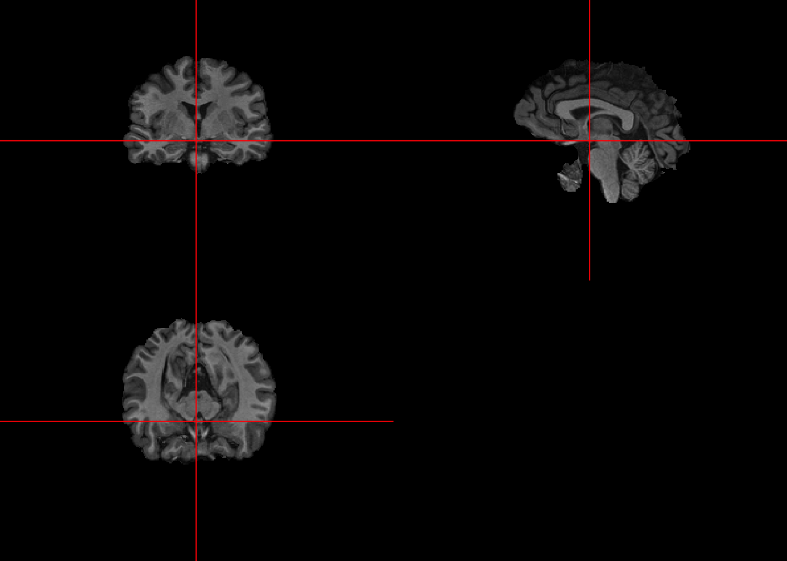

Lecture 7 Skull Stripping with FSL’s Brain Extraction Tool (BET)
7.1 Loading file
#set fsl path before running fslr in RStudio
library(fslr)
if(!have.fsl()){
options(fsl.path = '/usr/local/bin')
}
#Check file paths for data downloaded from
library(oro.nifti)
fpath = "Neurohacking_data/kirby21/visit_1/113"
fname = "fast-113-01-MPRAGE"
fast_img = readNIfTI(file.path(fpath,fname), reorient=FALSE)7.2 Running BET
## FSLDIR='/usr/local/fsl'; PATH=${FSLDIR}/bin:${PATH};export PATH FSLDIR; sh "${FSLDIR}/etc/fslconf/fsl.sh"; FSLOUTPUTTYPE=NIFTI_GZ; export FSLOUTPUTTYPE; ${FSLDIR}/bin/bet2 "/private/var/folders/wk/jzm8xd01507b9nx7qmycj7700000gn/T/RtmpmusoTp/file2c314bb9976d.nii.gz" "/var/folders/wk/jzm8xd01507b9nx7qmycj7700000gn/T//RtmpmusoTp/file2c311d9f6564"7.3 Visualizing first past
To visualize the effects of the brain extraction on the original, the orthographic may be used twice by passing (1) the image returned by BET, (2) the original image overlaid by a mask. To produce the mask, follow the code below.
# create an array of 1s with same dimensions as the skull-stripped image
bet_fast_mask = niftiarr(bet_fast, 1)
# set all non-brain voxel to NA
bet_fast_mask[!(bet_fast > 0)] <- NA
# plot
orthographic(bet_fast)

The results are not great since a lot of non-brain areas get included.
7.4 Improving Brain Extraction
To improve upon the results, a second pass can be done taking into account the center of gravity.
# use the cog function on the skull-stripped image
cog = cog(bet_fast, ceil = TRUE)
#prepare a string to be passed to opts parameter of fslbet
cog = paste("-c", paste(cog, collapse = " "))
# run BET on the bias-corrected img using the center of gravity to get cleaner results
bet_fast2 = fslbet(infile = fast_img, retimg = TRUE, opts = cog)## FSLDIR='/usr/local/fsl'; PATH=${FSLDIR}/bin:${PATH};export PATH FSLDIR; sh "${FSLDIR}/etc/fslconf/fsl.sh"; FSLOUTPUTTYPE=NIFTI_GZ; export FSLOUTPUTTYPE; ${FSLDIR}/bin/bet2 "/private/var/folders/wk/jzm8xd01507b9nx7qmycj7700000gn/T/RtmpmusoTp/file2c314582822.nii.gz" "/var/folders/wk/jzm8xd01507b9nx7qmycj7700000gn/T//RtmpmusoTp/file2c313a31728f" -c 88 140 1297.5 Visualizing first and second pass

The results have improved, removing much of the lower non-brain sections. However, we can see the results are not perfect so it’s important to visually inspect each image at each phase of the processing pipeline.